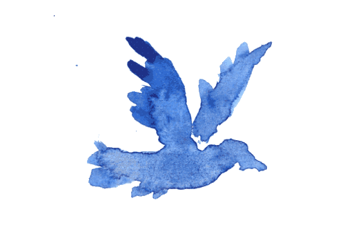

INT. WATERCOLOR SKY — DAWN
A BLUE BIRD drifts across a painted horizon.
The sky bleeds white into pale blue.
BLUE BIRD (V.O.)
I thought the world was a straight line.
The river below looks brushed, not real.
Every ripple feels intentional.
The bird dips toward its reflection.
BLUE BIRD
If I touch it… will I blur?
It touches.
The water blooms outward in watercolor circles.
CUT TO:
The bird rising.

Scroll